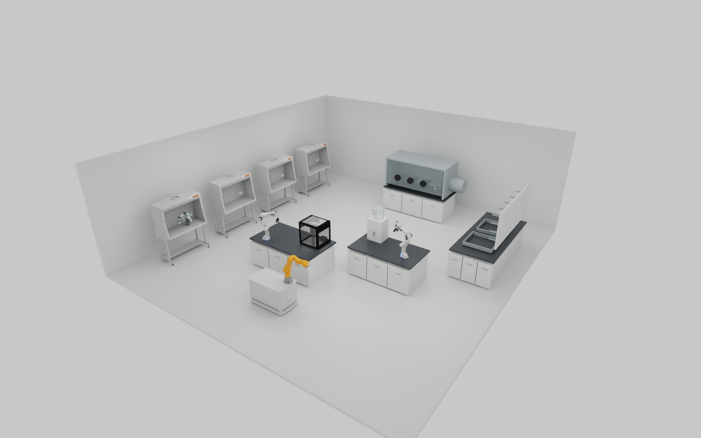
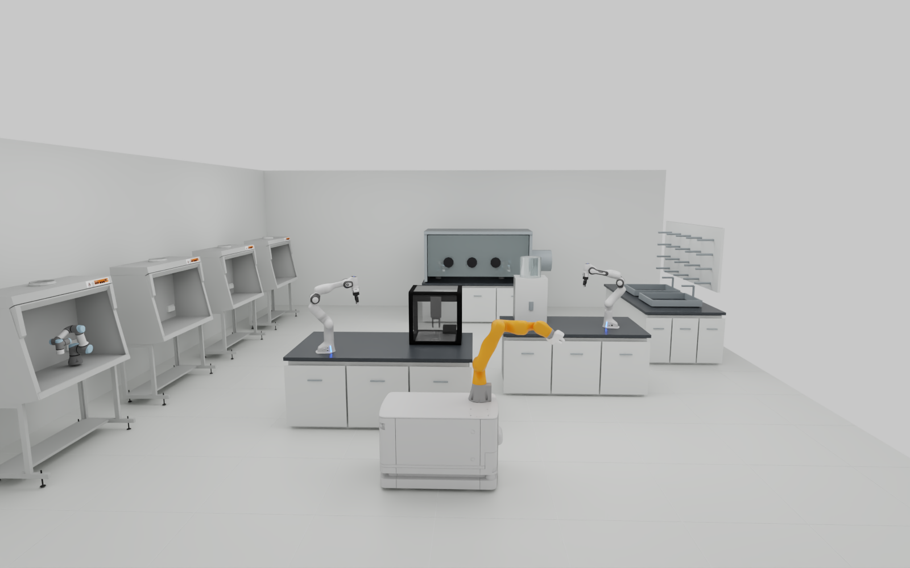
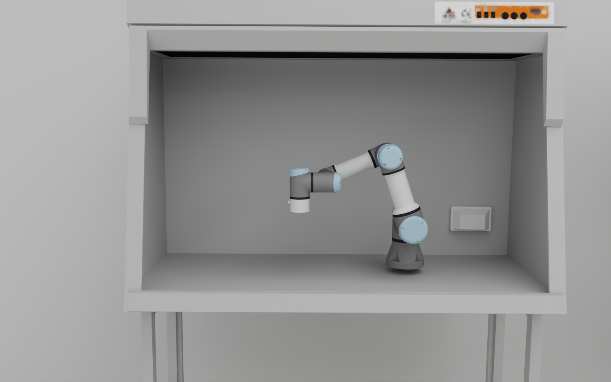
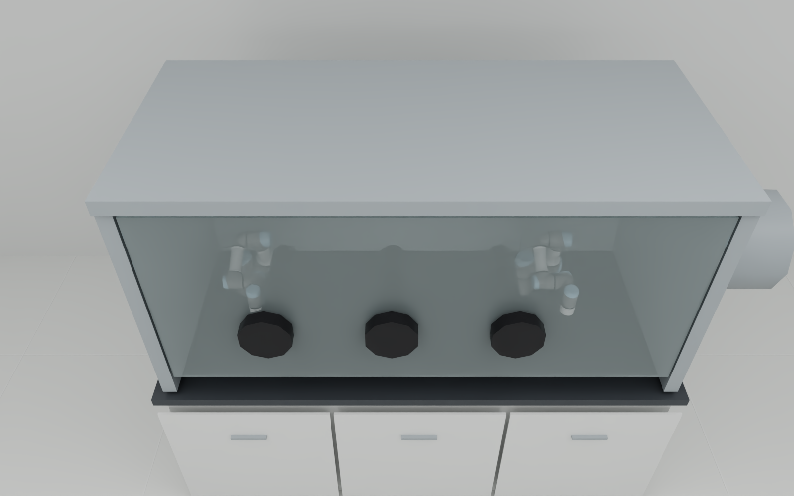
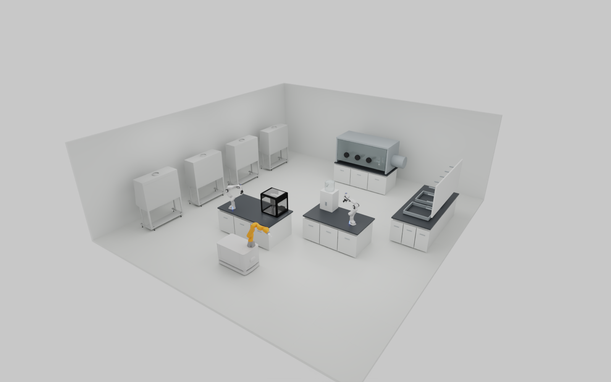
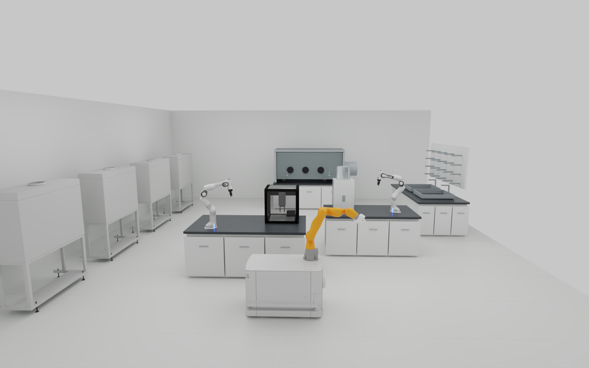
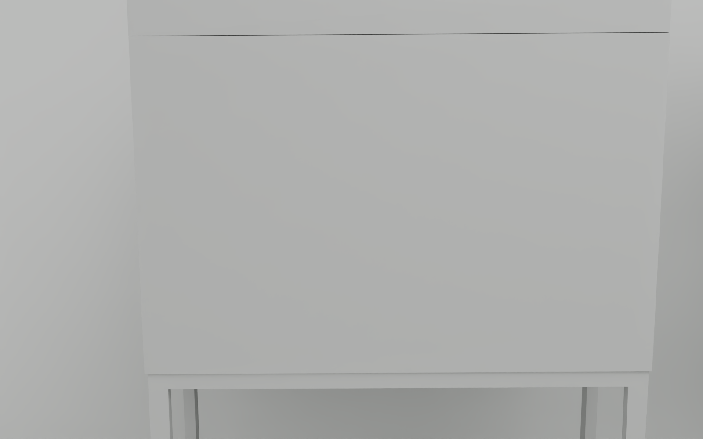
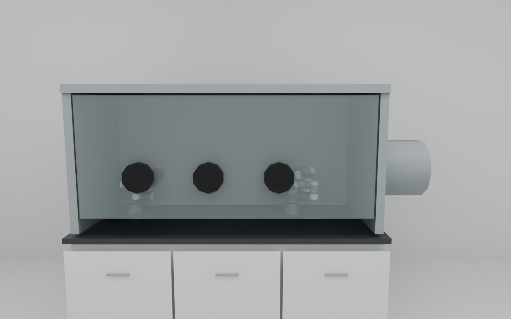

MATTERIX / LABORATORY RECONSTRUCTION
The scene, as rendered.
完整实验室的原生截图与视觉验收。保留遮挡、缺失资产和未通过项。
These are actual Isaac RTX PathTracing captures of the local scene. They show the current reconstruction, including its defects. No physics task ran during capture.
R5 / LAYOUT CORRECTION
Hood orientation fixed. Other gaps remain visible.
Four hood assemblies and the hood arm rotate together by180° to face the aisle. Native geometry, materials and joint definitions are retained. The first three views use the same cameras as the failed R4 captures below; only the glovebox view uses a higher camera.


Corrected laboratory overview
Four hood openings now face the aisle. Same camera as R4; only the declared hood assembly placement changes. This remains a local reconstruction.
Download original PNG ↗

From the same central aisle
The hood arm is now visible from the aisle. The nearest hood is still partly cropped. Original metric layout and full device behavior remain unverified.
Download original PNG ↗

Hood close-up · orientation repaired
The native UR3e body is clearly visible with the same camera and unchanged materials. The task gripper and hood door body are missing. At the support point, the source collider is about23.76mm above the visible counter; actual mounting contact is unverified.
Download original PNG ↗

Glovebox · two arms visible, clarity open
A higher oblique camera makes both arms distinguishable without hiding ports or changing the window. Grey glass and low contrast remain; this is a camera change, not a material-fidelity pass.
Download original PNG ↗R5 evidence and image hashes ↗ · Inspect retained R4 failures ↓
FAILURE ARCHIVE / R4
Earlier views, retained unchanged

Laboratory overview
Two Panda stations and the mobile manipulator are visible. Three UR3e arms exist in the scene but are not clearly visible in this view.
Download original PNG ↗
From the central aisle
The OT2 station, solid-dispenser placeholder, sink and drying rack can be inspected. The nearest hood is partly cropped. The arrangement is a local reconstruction; metric agreement with the original laboratory is not established.
Download original PNG ↗
Hood close-up · visibility failed
The camera faces an opaque shell. The UR3e arm is fully hidden. A successful image write does not pass subject visibility.
Download original PNG ↗
Glovebox close-up · visibility failed
Parts of both arms can be seen, but the ports and grey window obscure them. Grippers, task operation and visual equivalence remain unverified.
Download original PNG ↗REMAINING WORK
Assets and behavior still to reproduce
| Component | Current evidence and gap |
|---|---|
| UR3e stations | Native robot meshes, materials, colliders and joints retained. Task grippers and executed station workflows are still missing. |
| Hood door | The source fixed-joint declaration points to a missing glass body. A joint declaration is not a complete door; body recovery and actuation remain open. |
| Mobile manipulator | Third-party KMR model placed in the scene. Wheel dynamics and coupled base–arm execution are not validated. |
| Laboratory fidelity | Room dimensions and placements are declared local assumptions. The glovebox, sink, dispenser and drying rack include local geometry with incomplete device behavior. |
Download scoped evidence and image hashes ↗ · 36-requirement reproduction audit ↗